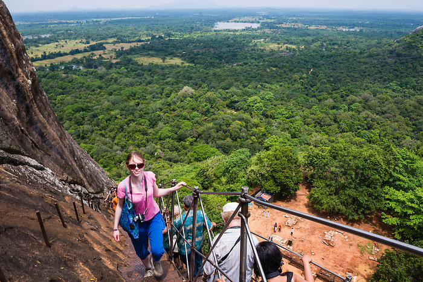
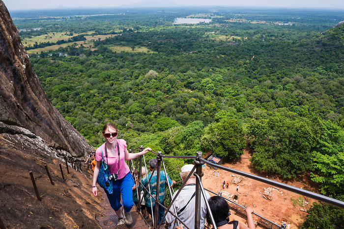
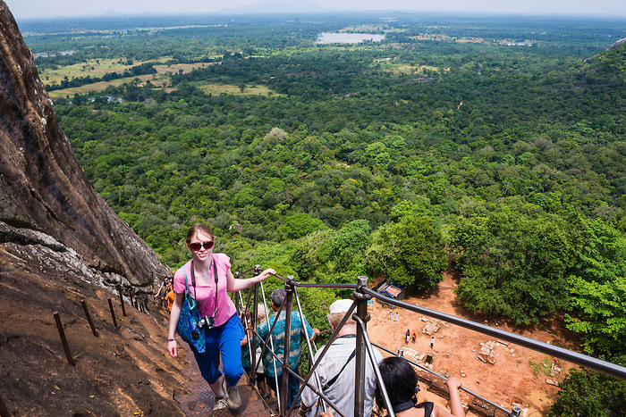

After taking breakfast transfer to Sigiriya
Visit world famous Sigiriya Rock
(Known as 8th Wonder of the World)

Sigiriya Village Tour

Lake

Minneriya Safari


Take dinner and stay night in Sigiriya
-